Installing Arduino Library#
Overview#
An Arduino library is a collection of pre-written code that adds extra functionality to your sketches. Instead of writing complex code from scratch, a library gives you ready-to-use functions, for example, to control a sensor, communicate over Bluetooth, or drive a display. You simply include the library at the top of your sketch and call its functions directly.
Arduino libraries can be installed in two ways. The easiest method is through the built-in Library Manager directly inside Arduino IDE. If the library you need is not listed there, you can download it as a ZIP file from GitHub and install it manually.
This guide covers both methods. Try Part 1 first, and fall back to Part 2 only if the library is unavailable in the Library Manager.
Part 1: Installing Using Library Manager#
The Library Manager is the recommended way to install Arduino libraries. It lets you search, install, and update libraries directly from within Arduino IDE.
Note
This part uses the MPU6050 library as an example. MPU6050 is a commonly used IMU sensor library available in the Arduino Library Manager that lets you read accelerometer and gyroscope data. You can follow the same steps for any other library.
Step 1: Open Arduino IDE#
Launch Arduino IDE on your computer and wait for it to fully load.
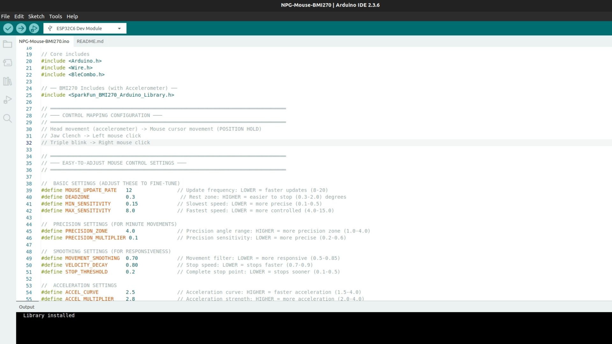
Arduino IDE ready to use#
Step 2: Open the Library Manager#
You can also open the Library Manager directly with the keyboard shortcut Ctrl + Shift + I (Windows/Linux) or Cmd + Shift + I (macOS). Otherwise, follow the steps below.
2.1 In the menu bar, click on Sketch. A dropdown menu will appear.
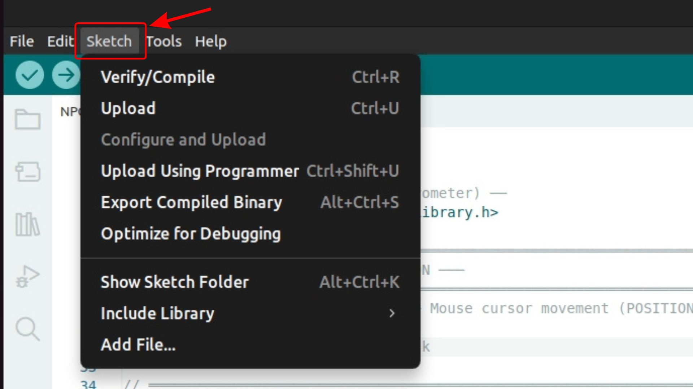
Click on “Sketch” in the menu bar#
2.2 In the dropdown, move your mouse over Include Library. A submenu will slide out to the right.
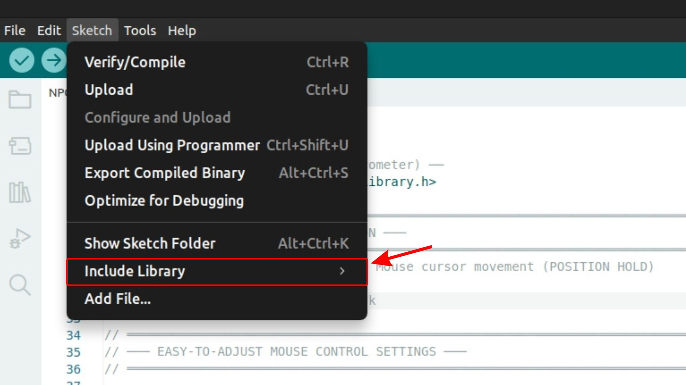
Hover over “Include Library” to open the submenu#
2.3 From the submenu, click Manage Libraries…. The Library Manager panel will open on the left side of the IDE.
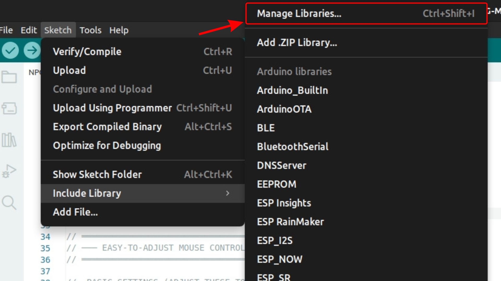
Click “Manage Libraries…” to open the Library Manager#
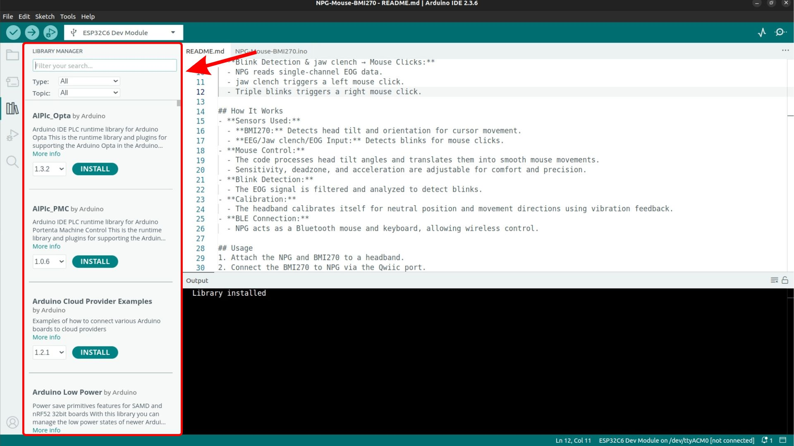
The Library Manager panel open in Arduino IDE#
Step 3: Search for the Library#
In the search bar at the top of the Library Manager, type the name of the library you want to install. For example, type MPU6050 to find libraries for the MPU6050 sensor.
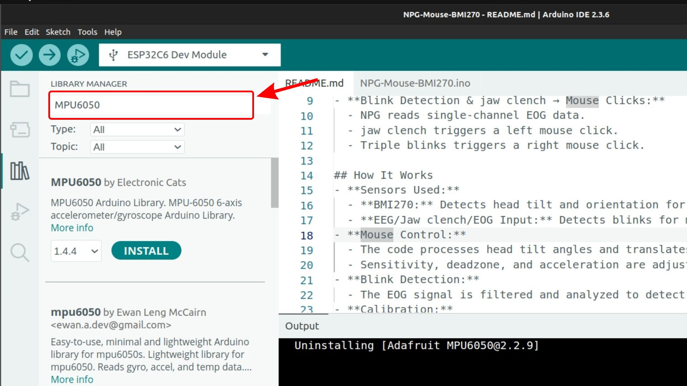
Type the library name in the search bar#
The search will return a variety of results from different authors. Review the options and choose the one that best fits your project. For example, you can use MPU6050 by Electronic Cats or Adafruit MPU6050 by Adafruit, depending on your requirements.
Note
If the library does not appear in the search results, it is likely not published in the official Arduino Library Manager. In that case, close the Library Manager and follow Part 2: Installing Using a .ZIP File from GitHub of this guide to install it manually from GitHub.
Step 4: Install the Library#
When you find the library you want in the list, click on it to expand its details. Select the version you want from the dropdown (the latest version is selected by default), then click Install. For example, click on MPU6050 by Electronic Cats and click Install.
Arduino IDE will download and install the library. A confirmation message will appear once the installation is complete.
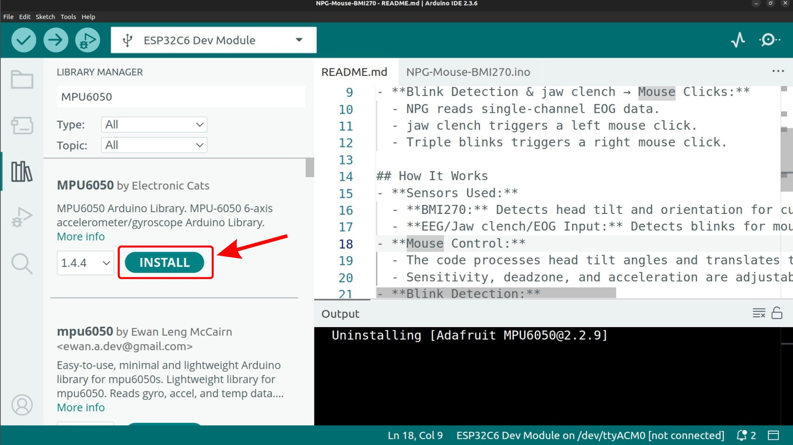
Click Install to install the selected library#
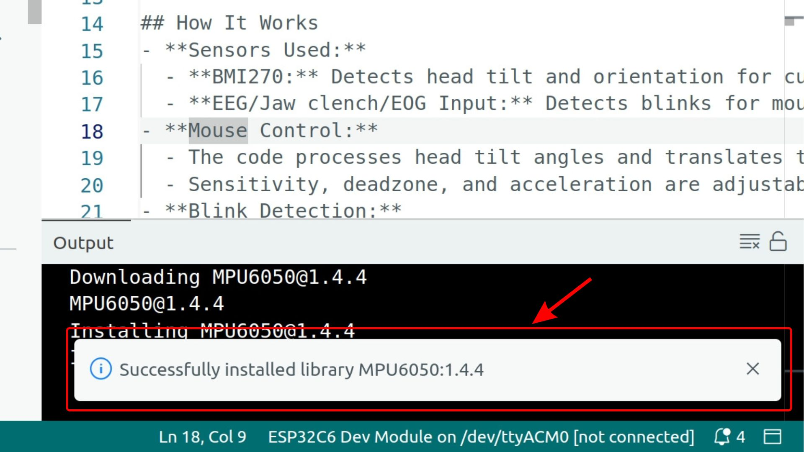
Click Install to install the selected library. The confirmation message is shown at the bottom right of Arduino IDE after installation.#
Step 5: Verify the Installation#
To confirm the library was installed, click Sketch > Include Library. Scroll through the list under Contributed Libraries and look for the library you just installed. For example, you should see MPU6050 listed there.
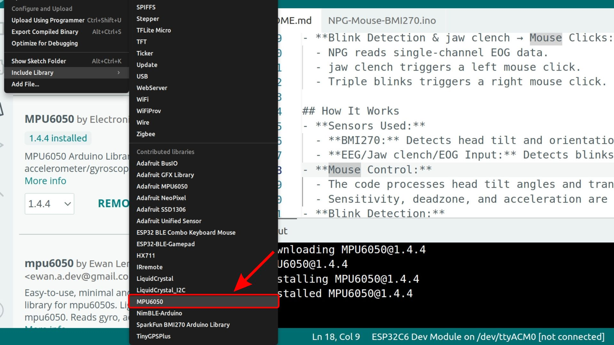
The MPU6050 library appears under Contributed Libraries#
Part 2: Installing Using a .ZIP File from GitHub#
Note
This guide uses the ESP32-BLE-Combo library as an example. If you search this library in the Library Manager, you will not find it because it is not published there, so you will need to install it using the steps below. You can follow the same steps for any other GitHub-hosted Arduino library.
Some Arduino libraries are not published in the official Arduino Library Manager and are only available on GitHub. This section walks you through downloading such a library from a GitHub repository and installing it in Arduino IDE using the “Add .ZIP Library” method.
This method works for any library available as a ZIP file on GitHub. It does not require you to clone the repository or use Git commands, making it accessible for beginners.
Step 1: Open the GitHub Repository#
Open your web browser and navigate to the GitHub repository of the library you want to install.
For the ESP32-BLE-Combo library, go to: upsidedownlabs/ESP32-BLE-Combo
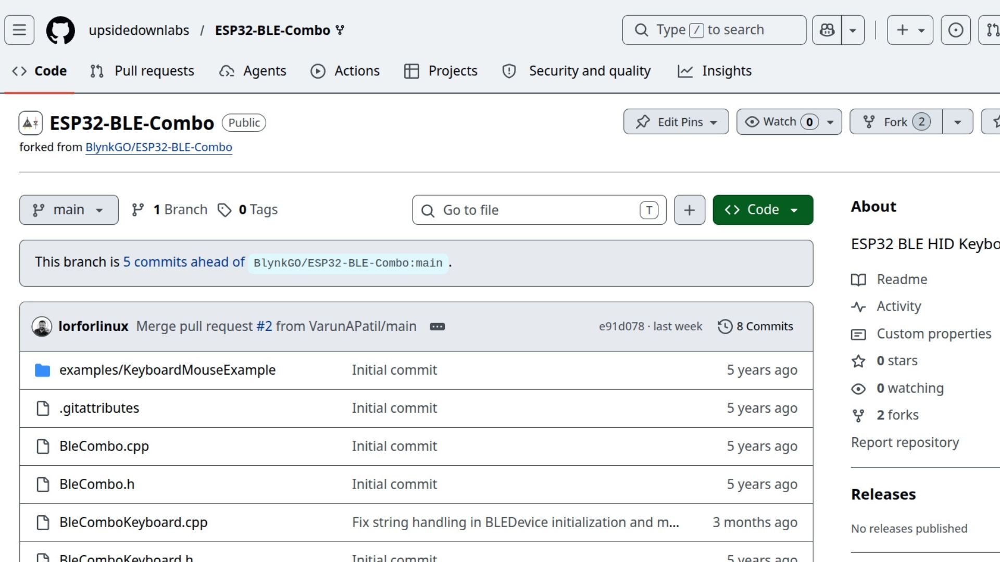
The GitHub repository page for the library#
Step 2: Download the ZIP#
On the repository page, click the green Code button near the top-right of the file listing. A dropdown menu will appear with several options.
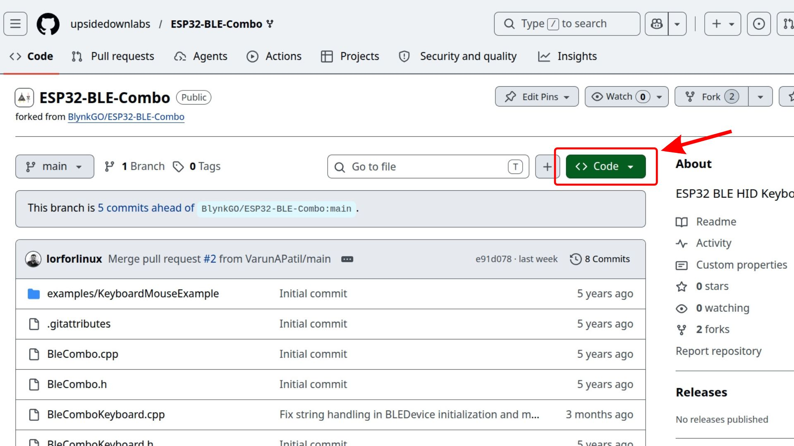
Click the green “Code” button to open the download dropdown#
From the dropdown, click Download ZIP. Your browser will download a .zip archive of the entire repository to your computer (usually to the Downloads folder).
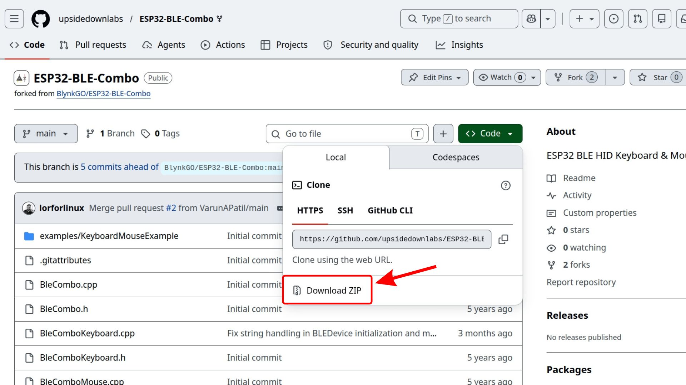
Select “Download ZIP” from the dropdown#
Note
Do not unzip the file. Arduino IDE needs the file in its original .zip format to install it correctly.
Step 3: Open Arduino IDE#
Launch Arduino IDE on your computer. Wait for it to fully load before proceeding.
Arduino IDE ready to use#
Step 5: Hover Over “Include Library”#
In the dropdown, move your mouse over Include Library. A submenu will slide out to the right.
Hover over “Include Library” to open the submenu#
Step 6: Click “Add .ZIP Library…”#
From the submenu, click Add .ZIP Library…. A file picker dialog will open.
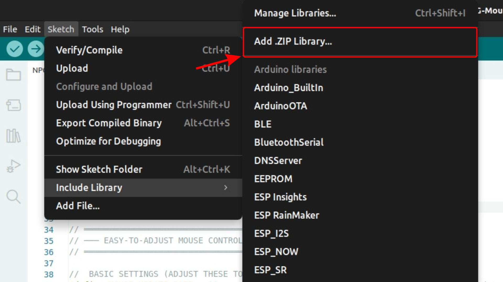
Click “Add .ZIP Library…” from the submenu#
Step 7: Select the Downloaded ZIP#
In the file picker dialog, navigate to the location where you saved the downloaded ZIP file (typically the Downloads folder). Select the ZIP file and click Open (or Choose on macOS).
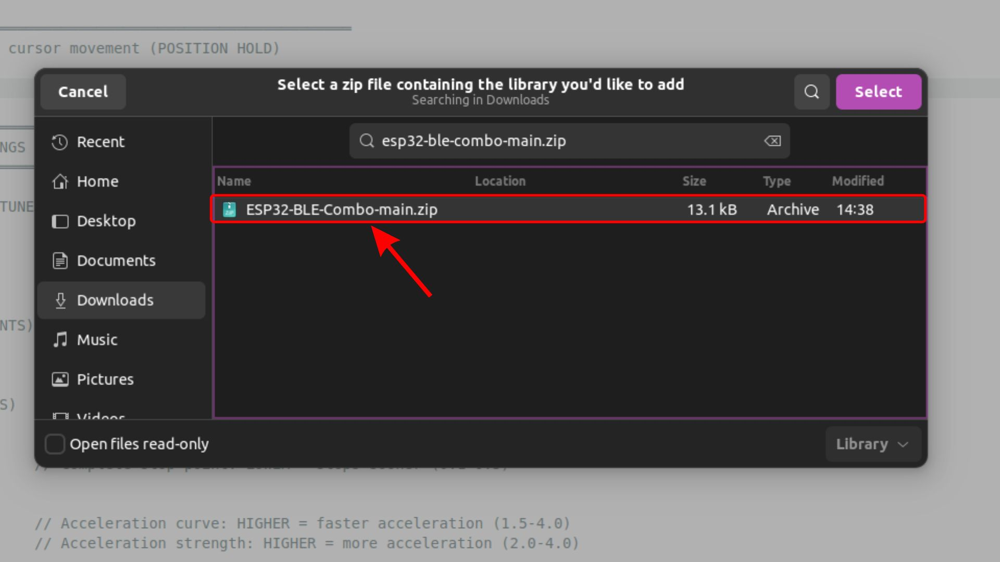
Select the downloaded ZIP file and click Open#
Arduino IDE will install the library. You should see a success message at the bottom of the IDE window:
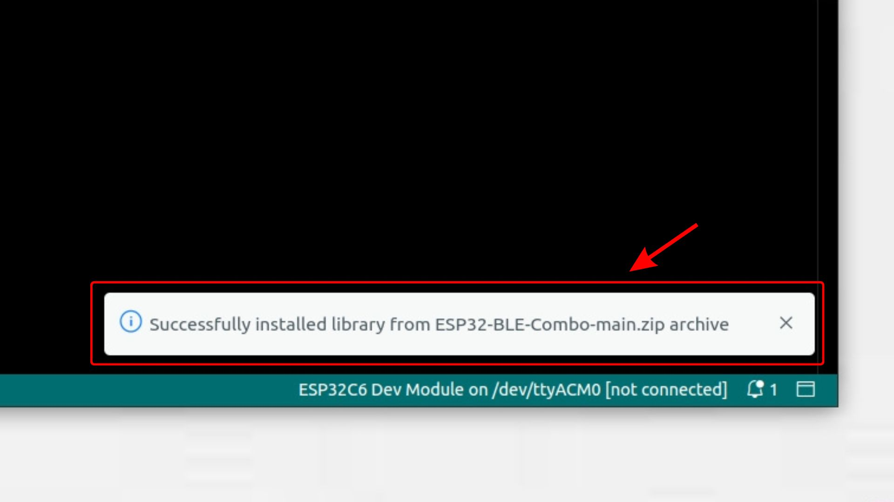
“Library installed” confirmation shown at the bottom of Arduino IDE#
Step 8: Verify the Installation#
To confirm the library was installed correctly, click Sketch > Include Library in the menu bar. Scroll down till the end, under the contributed libraries, look for ESP32 BLE Combo Keyboard Mouse.
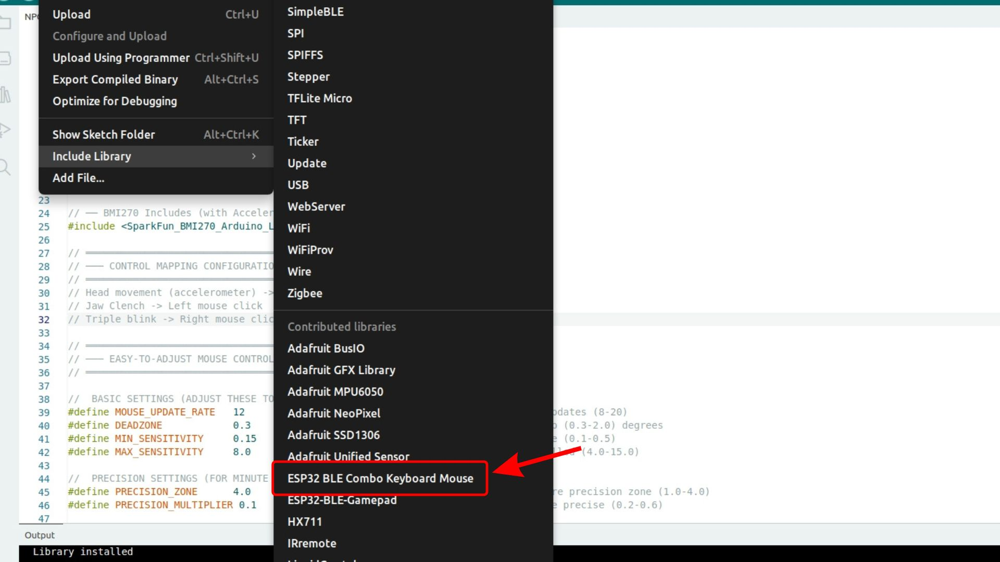
The installed library appears at the bottom of the Include Library list#
Now that you have followed all the steps, the ESP32 BLE Combo Keyboard Mouse library is installed globally in your Arduino IDE, and you can use it in any of your sketches by including it at the top of your code:
#include <BleCombo.h>
Troubleshooting#
- The library does not appear in the list after installation
Close and reopen Arduino IDE, then check the list again. If it is still missing, repeat the Add .ZIP Library step.
- “No valid library found in the ZIP” error
This usually means the ZIP was extracted and re-compressed before installation, which can break the folder structure that Arduino IDE expects. Download the ZIP fresh from GitHub without unzipping it first, then try to include it again. Note: some operating systems automatically extract ZIP files on download, so if you re-zip the folder yourself it may not match the expected structure.
- The ZIP failed to download
Try refreshing the GitHub page and clicking Download ZIP again. If the repository is private, make sure you are logged into GitHub and have access.
See also
Resolving software issues for general Arduino IDE troubleshooting tips.
Contribute to Documentation to understand how you can contribute to us.